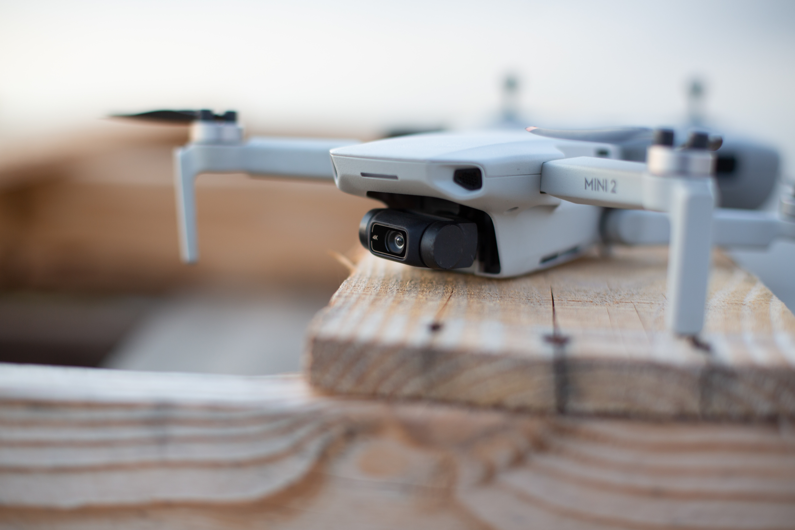

DJI Mavic Mini 2

DJI Mavic Mini 2 to udoskonalony model drona, który jest idealny dla miłośników fotografii i filmowania z powietrza. Ten kompaktowy dron oferuje doskonałą jakość obrazu i wydajność w niewielkim rozmiarze.
Główne cechy:
- Wysokiej jakości kamera: Mavic Mini 2 jest wyposażony w kamerę o rozdzielczości 4K, co pozwala na nagrywanie wideo i robienie zdjęć w imponującej jakości.
- Świetna stabilizacja: Dron wyposażony jest w zaawansowany system stabilizacji, co pozwala na płynne i stabilne nagrania.
- Składane śmigła: Dzięki składanym śmigłom, Mavic Mini 2 jest łatwy do przenoszenia i przechowywania.